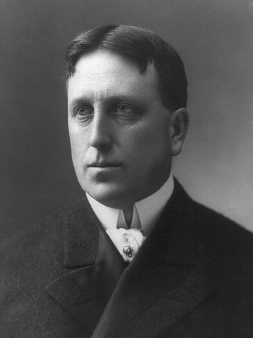

1905 New York City Mayoral Election
| 1905 New York City Mayoral Election | ||
|---|---|---|
| Date | November 7th, 1905 | |
|
 |

|
|
|
William Randolph Hearst Municipal Ownership League 37.8% |
George B. McClellan Jr. Democratic 37.2% |
William Mills Ivins Sr. Republican 22.7% |
|
|
||
| Elected Mayor | William R. Hearst Municipal Ownership League |
|
| Next Election | 1909 Mayoral Election | |
The election for Mayor of New York City was held on November 7, 1905.
Candidates included incumbent mayor George B. McClellan Jr., newspaper publisher and two-term U.S. Representative William Randolph Hearst, and reform advocate William Mills Ivins Sr.
Hearst secured election with a narrow margin.
There was evidence of electoral fraud against Hearst linked to the Tammany Hall machine, as well as violence and intimidation against Hearst poll watchers.
General Election
Campaign
Results
On election day, there were widespread reports of voter fraud, poll watchers being chased from polling stations, delays in reporting returns, and unopened and uncounted ballots disappearing or being misplaced, including in the East River. The Independent described it as "the most extraordinary election ever witnessed in New York City."